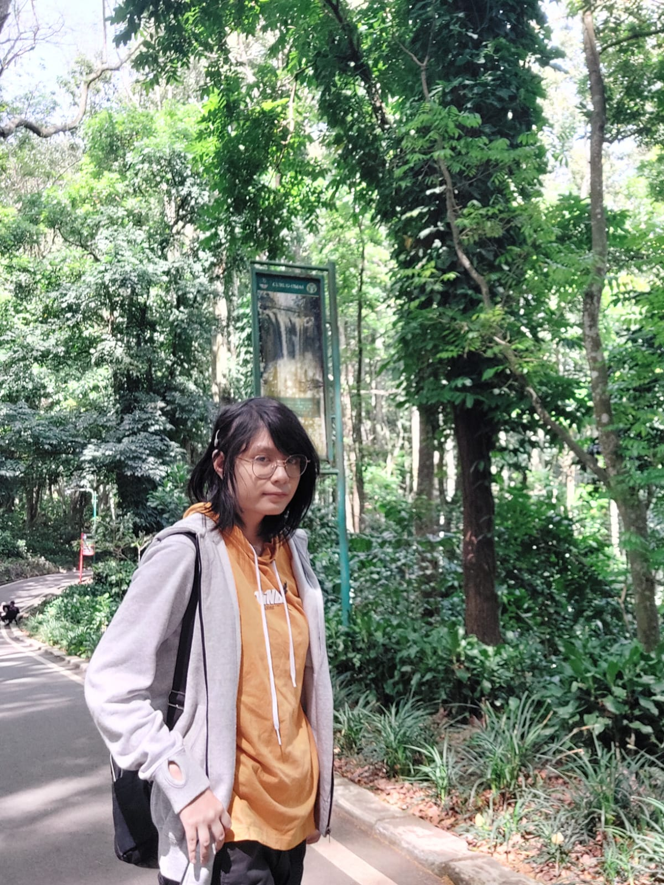

Foto SayaHALO!!!
Perkenalkan, Saya Alfianissa
Website ini merupakan website pribadi saya untuk tugas ke 4 mata kuliah Pemrograman Web Dasar
Tentang Saya
Saya adalah pekerja sekaligus mahasiswa Universitas Langlangbuana yang sedang belajar membuat halaman web menggunakan HTML dan CSS.
Identitas
Mahasiswa & Pekerja
Program Studi
Teknik Informatika
Pekerjaan
Sebagai TU Di Sekolah
Kegiatan Sehari-hari
Berikut adalah garis besar rutinitas saya.
| Waktu | Kegiatan | Keterangan |
|---|---|---|
| Pagi | Persiapan aktivitas | Mandi, sarapan, dan berangkat kerja |
| Siang | Istirahat | Makan siang |
| Sore | Waktu Pulang | Perjalanan Pulang kerumah |
| Malam | beristirahat atau mengerjakan tugas | mengerjakan tugas kuliah atau menyelesaikan sisa pekerjaan setelah itu tidur |